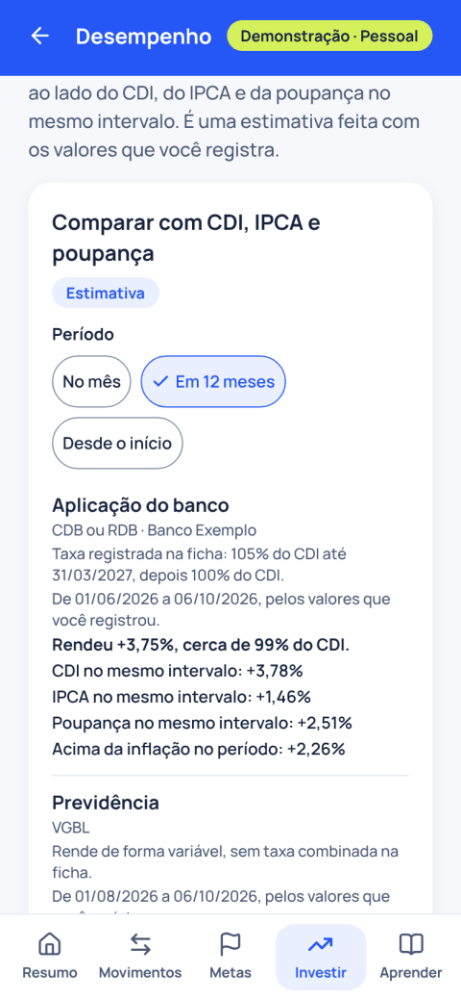
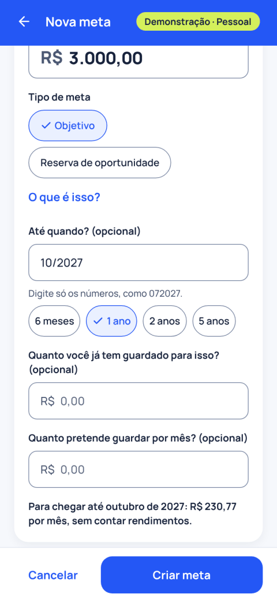

O que chegou ao app em novembro
A aba Investir, com a rentabilidade ao lado do CDI e do IPCA, o ritmo e os marcos das metas, a fatura do cartão em Multa e juros e o app em cinco abas.
Em novembro de 2026, o app da Clarevo ganhou uma aba nova e algumas melhorias. Este texto reúne o que mudou e onde ver cada coisa.
A aba Investir
Na aba Investir, você acompanha o que já investe. Você registra o que aplicou, os aportes, os resgates, os rendimentos recebidos e o valor de hoje, como aparecem no seu extrato. O acompanhamento é manual: a Clarevo não se conecta a banco nem a corretora, e o valor só muda com o que você registra.
A rentabilidade dos meses fechados aparece ao lado do CDI e do IPCA do mesmo período, com dados públicos do Banco Central. Não é recomendação de investimento, e o que rendeu no passado não garante o futuro.
Aportes, resgates e rendimentos não entram em Pago nem em Recebido. Os investimentos ficam só no seu Pessoal: ninguém da Família vê, nem a empresa que oferece o benefício.

Metas com atalhos de prazo, ritmo e marcos
- Ao criar uma meta, os atalhos de prazo preenchem a data por você: 6 meses, 1 ano, 2 anos ou 5 anos.
- O cartão de cada meta com valor planejado por mês mostra o ritmo: se os aportes acompanham o plano e quanto falta.
- Ao passar de 25%, 50% e 75% da meta, uma frase curta marca o avanço.
O valor guardado continua andando só com o que você registra.

Multa e juros, agora com a fatura do cartão
A calculadora Multa e juros por atraso passou a ter dois modos. Em "Conta ou boleto", a conta é a de sempre: a multa e os juros, com os percentuais do boleto ou do contrato. Em "Fatura do cartão", ela soma os juros do rotativo, os juros de mora, a multa e o IOF estimado sobre o valor que ficou sem pagar, com os percentuais que você lê na fatura.
O que fica sem pagar na fatura vira crédito rotativo, com juros. Para dívidas desde 3 de janeiro de 2024, juros e encargos não podem passar do valor original.
A mesma calculadora funciona aqui no site, no seu navegador, sem enviar nada. O tema Rotativo do cartão e parcelamento da fatura explica as regras, com as fontes.
Cinco abas
Com a aba nova, o app passa a ter cinco abas: Resumo, Movimentos, Metas, Investir e Aprender. A sua conta continua no avatar, no alto da tela.
O passeio completo, com telas da demonstração, está na página O app.
Fontes
Na Clarevo
- O app, com telas da demonstração
- Ajuda: como usar Investimentos
- Ajuda: como usar Metas e reserva
- Calculadora Multa e juros por atraso
- Segurança e privacidade
- Aprender: Rotativo do cartão e parcelamento da fatura revisado em 10/10/2026
Fontes oficiais
- Presidência da República: Lei nº 14.690/2023 consultada em 09/10/2026
- Conselho Monetário Nacional e Banco Central do Brasil: Resolução CMN nº 4.549/2017, texto consolidado com a Resolução CMN nº 5.112/2023 consultada em 09/10/2026
- Conselho Monetário Nacional e Banco Central do Brasil: Voto CMN nº 67/2023 consultada em 09/10/2026
- Banco Central do Brasil: Instruções de preenchimento do documento 3060 (juros acumulados do cartão) consultada em 09/10/2026
- Procon Goiás: Com nova regra, juros do rotativo do cartão não poderão ultrapassar dívida original consultada em 09/10/2026
Os temas também se apoiam em regras da própria Clarevo, que dizem como o app funciona e por isso não têm link.
Publicado em 12 de novembro de 2026 por Equipe Clarevo. Se encontrarmos um erro, corrigimos neste mesmo texto e registramos a correção aqui. Veja como escrevemos.